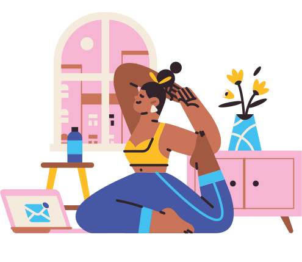

En 2020, notre vie a changé. Nous avons découvert une nouvelle manière de travailler : Le télétravail.
Outil d’épanouissement pour certains, instrument d’exclusion sociale pour d’autres,
aujourd’hui nous allons vous démontrer les vertus et les bienfaits du télétravail.
Les chiffres clés du travail à distance
Des salariés pratiquent le travail à distance
Des salariés pratiquent le travail à distance
Des salariés pratiquent le travail à distance
Des salariés pratiquent le travail à distance
Des salariés pratiquent le travail à distance
Raison 1
Par le télétravail, du temps tu gagneras
Gain de temps
Moins de stress face au retard
Meilleur confort et meilleure humeur à l’arrivée au travail
Plus d’heures de sommeil
Se rendre à ses rendez-vous pendant sa pause
Éviter les heures d'affluence des transports ou route trop bondés
De vraies longues soirées non parasités par les transports
Gain de temps sur le week-end
Éviter la foule pour faire ses courses
Les chiffres en parlent
Diminution de la fatigue
De réduction de trajet
Souplesse des horaires
Astuces du télétravailleur
Être flexible dans ses horaires, et s’adapter aux contraintes de la vie personnelle
Se fixer une plage horaire de travail fixe sur la journée, sur laquelle on se réservera à 100% à son travail
Mettre à contribution le temps gagné
Raison 2
Par le télétravail, de l’argent tu économisera
Économie pour les salariés et les employeurs
Plus de temps pour préparer des repas à la maison et éviter les restaurants et fast food
Frais de télétravail déductible des impôts
Payer ses courses alimentaires avec ses tickets restaurant
Économie sur le carburant et titre de transport
Pas de frais de locaux ou éléctricité pour les employeurs
Durant le premier mois de confinement, les frais d’entretien
et de carburant de notre parc automobile sont descendus à un tiers de leur niveau habituel
Sonja Palmans, directrice financière d’EuroSys
150 euros
par mois, économisés en télétravail pour un salarié
Raison 3
Par le télétravail, moins de stress et d’anxiété tu ressentiras et ton esprit tu aideras
Diminution du stress lié aux horaires (transports, réveil)
Moins de conflits
Se montrer plus naturel (sans hypocrisie)
Meilleure humeur tout au long de la journée de travail
Meilleure intégration des personnes timide, agoraphobe et anti-social
Bien-être général plus positif
Fini le stress lié aux horaires à respecter,
aux relations difficiles avec certains collègues et
aux réunions qui vous empêchent d’avancer. Les conflits peuvent ruiner toute une journée de travail.
Les chiffres en parlent
Des salariés à distance disent ne pas ressentir de stress pendant une journée de travail
Affirment être plus heureux depuis qu’ils télétravaillent
Des employeurs déclarent que la flexibilité du télétravail a réduit le renouvellement du personnel
Des télétravailleurs disent être heureux dans leur emploi actuel, contre 55 % des employés sur site
Raison 4
Par le télétravail, ta vie professionnelle et privée tu faciliteras
Avantage précieux notamment pour les parents, le télétravail favorise l’équilibre entre vie de famille et vie professionnelle.
Un équilibre souvent difficile à trouver et à garder lorsque l’on travaille en-dehors de chez soi !
Le télétravail vous permet également d’avoir des horaires de travail plus souples.
Cela vous laisse plus de temps dans votre journée et dans votre semaine afin de vous occuper et profiter de votre famille,
d’effectuer plus de loisir et de penser à votre bien-être. C’est un bienfait pour accroître votre productivité,
vos performances professionnelles, votre motivation ainsi qu’un développement de votre épanouissement personnel.

Permet de faire du sport et d’avoir une alimentation plus saine
Réaliser ses missions avec plus de plaisir
Créer son propre espace pour travailler
Horaires plus souples
Plus de temps en famille
Prendre soin de son corps et son esprit
83%
Des salariés sont heureux au travail
Raison 5
Par le télétravail, plus concentré.e et plus productif.ve tu seras
Le télétravail aurait fait grimper
la productivité des salariés de 22 %, selon les calculs de l’institut Sapiens,
cette efficacité a notamment contribué à préserver plus de 200 milliards d’euros de PIB en 2020.
Meilleure concentration
Éviter les bruits et discussions qui nous entourent
Évite les pauses à rallonges
Rester focus sur ses projets
Prendre ses pauses aux horraires désirés
Baisse des interruptions, du parasitage de bureau
Les chiffres en parlent
Des personnes préfèrent travailler seules
Affirment être déconcentré par leurs collègues bruyant
Avouent que les réunions de dernière minutes chamboulent leurs missions
Les open spaces : du rêve à la réalité
Les open spaces qui ont eu le vent en poupe ces dernières années,
ne sembleraient pas aussi idylliques que l’on aurait pu croire. Effectivement,
selon une étude menée par Harvard Business Review, sur un panel de travailleurs interrogés, 45 %
affirmaient être régulièrement interrompue dans leur travail.
Raison 6
Par le télétravail, plus confortable tu seras
Adapter son bureau et son siège à ses besoins
Permet de ne pas se soumettre aux dictates vestimentaire de la société
Éviter les intempéries, comme les fortes chaleurs, neige et averses
Possibilité de rester dans une tenue décontractée
Optimiser le confort de son espace de travail
Evitez et limitez les nuisances sonores
Pensez à faire régulièrement des pauses dans une zone calme :
à vous isoler pour effectuer des tâches demandant une concentration
importante lorsque cela est possible; ou à porter des bouchons d'oreille ou un casque anti-bruit.
Choisissez avec attention l'emplacement de votre bureau
La lumière naturelle a un effet direct sur la régulation de diverses fonctions
biologiques comme le sommeil, l'humeur, la vivacité intellectuelle
Aérez au moins 10 minutes par jour
Quand on télétravaille, d'aérer régulièrement son logement en créant des courants d'air.
L'air extérieur est en effet, en moyenne, 8 fois moins pollué que l'air intérieur.
Raison 7
Par le télétravail, plus d’autonomie tu auras
Les niveaux d’autonomie du télétravail
Niveau 0
Ancrée
Télétravail impossible à cause d'un ancrage matériel au lieu de travail.
Niveau 1
Improvisée
Télétravail instauré temporairement en urgence sans préparation, support ou consultation
Niveau 2
Acclimatée
Télétravail instauré temporairement ou pour de courtes périodes avec un accès aux document de l'entreprise
Niveau 3
Connectée
Travail à distance institutionnalisé et organisé autour de la collaboration à distance
Niveau 4
Décalée
Organisation du travail asynchrone et articulée autour du bien-être et de la créativité du collaborateur.
Niveau 5
Distribuée
Le travail à distance est le mode de travail "normal" et les télétravailleurs considérés comme des freelances
L’autonomie rend les salariés plus investis et productifs
Plus de confiance entre les employés et les employeus
“L'autonomie est une condition de l'efficacité”
Le télétravail se révèle être un nouveau modèle de travail pour les collaborateurs,
favorisant l'indépendance et l'autonomie au profit de la cohésion et de la productivité de l'entreprise.
Loin des clichés de l'isolement social, le suivi et la communication à distance sont parfaitement
jouables si correctement orchestrés.
Raison 8
Par le télétravail, ton travail partout tu feras
Le nomadisme numérique à de beaux jours devant lui. La preuve en chiffres.
66 % des salariés français aimeraient pouvoir choisir librement leur lieu de travail,
d'après une étude de Génie des Lieux, un cabinet de conseil indépendant en design,
co-conception et réalisation d'espaces de travail.
Se réveiller face à la mer ou la montagne,
répondre à ses mails à l’ombre d’un palmier tout en sirotant un jus de fruits frais,
déambuler dans les rues animées après une bonne journée de travail…
Voilà à quoi ressemble le quotidien de certains Français, qui, depuis le début de la crise sanitaire
et du premier confinement, ont préféré s’expatrier dans une destination plus exotique pour changer d’air.
Digitale nomade
Plus de motivation grâce au bien-être d’un meilleur environnement
Possibilité de partir en campagne
Découvrir de nouveaux pays tous les ans
Évite la routine du quotidien
Découvrir de nouveaux lieux et cultures
S’éloigner des zones urbaines bien trop peuplés
Convient aux passionnés de voyages
Raison 9
Par le télétravail, moins d’absentéisme tu feras, moins d'arrêt maladie tu demanderas
La pandémie n’est pas un révélateur, mais un accélérateur : il faut transformer cette période en une opportunité !
Permet de travailler lorsqu’on est en condition morale mais pas physique
Evites les arrêts lors des maladies bénignes
Même avec la jambe cassée, tu peux travailler !
Possibilité de travailler pendant les intempéries et grève de transport
Les chiffres en parlent
D'absentéisme en plus pour les non travailleurs
De baisse d’absentéisme depuis le premier confinement
Des télétravailleurs n’ont pas pris les arrêts maladie prescrits
D’absentéisme pour les travailleurs à distance
Raison 9
Par le télétravail, moins d’absentéisme tu feras, moins d'arrêt maladie tu demanderas
Les avantages du télétravail sur l’environnement sont indéniables.
Les diminutions des rejets de gaz à effet de serre sont dues en grande partie à
l’évitement des trajets en voiture et la réduction de l’empreinte immobilière des entreprises.
Bien que l’évaluation soit complexe, le bilan écologique du travail à domicile est encourageant.
On observe cependant que certains effets rebonds peuvent diminuer, voire annuler, les économies
carbone du télétravail. Un accompagnement intelligent et une adaptation globale de l’entreprise sont donc nécessaires.
Émission de GES évitées grâce au télétravail
29% des déplacements effectués ont réalisés pour un motif de déplacement domicile-travail.
Ces déplacements sont réalisés principalement en voiture et deux roues motrices, mais également à pied,
à vélo ou en transport en commun.Si on télétravaillait 1, 2, voire 5 jours par semaine, quels bénéfices
pourrait-on en tirer sur les émissions de GES, de polluants et de consommations en énergie ?